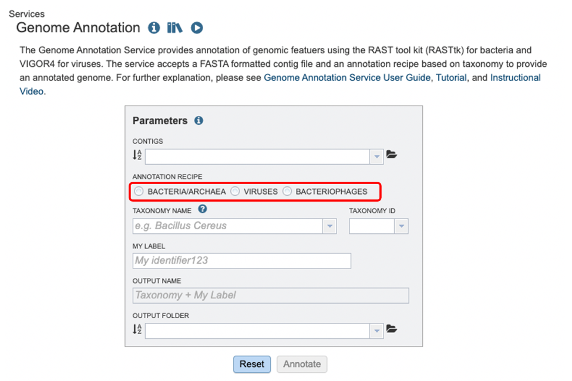
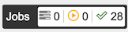
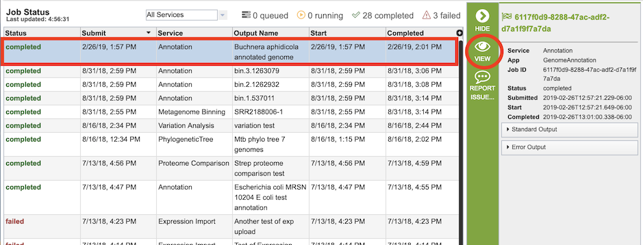
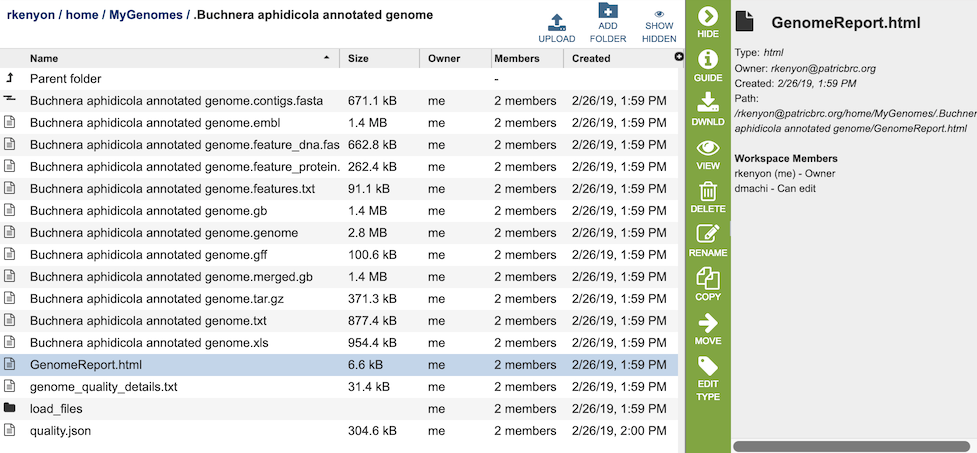

Genome Annotation Service¶
Overview¶
The Genome Annotation Service uses the RAST tool kit, RASTtk, for bacteria and either the Viral Genome ORF Reader (VIGOR4) or LowVan for viruses. The service accepts a FASTA formatted contig file and an annotation recipe based on taxonomy to provide an annotated genome, to provide annotation of genomic features. Once the annotation process has started by clicking the “Annotate” button, the genome is queued as a “job” for the Annotation Service to process, and will increment the count in the Jobs information box on the bottom right of the page. Once the annotation job has successfully completed, the output file will appear in the workspace, available for use in the BV-BRC comparative tools and/or can be downloaded if desired.
See also¶
Using the Genome Annotation Service¶
The Annotation submenu option under the Services main menu (Genomics category) opens the Genome Annotation input form (shown below). Note: You must be logged into BV-BRC to use this service.

Note: Both RASTtk and VIGOR4 also accommodates the batch submission of genomes and the ability to customize annotation protocols for batch submissions, available via the BV-BRC Command Line Interface (CLI).

Parameters¶
Contigs: The target FASTA file containing the genome sequence to annotate.
Annotation Recipe: The method of annotation, which will be determined by the type of microorganism chosen. Note: You MUST select this or jobs may fail.
Domain The taxonomic domain of the target organism: bacteria or archaea.
Taxonomy Name: The user-entered or selected taxonomic name for the organism. If the target species or strain is not listed, select the most specific, accurate taxonomic level available.
Taxonomy ID: A unique numerical identifier assigned by the NCBI to the source organism of the protein.
My Label: The user-provided name to identify the annotation result.
Output Name: The taxonomy name concatenated with the chosen label. This name will appear in the workspace when the annotation job is complete.
Output Folder: The workspace folder where results will be placed.
Taxon information¶
Taxon must be specified at the genus level or below to get the latest protein family predictions.
Output Results¶
Clicking on the Jobs indicator at the bottom of the BV-BRC page open the Jobs Status page that displays all current and previous service jobs and their status.

Once the job has completed, selecting the job by clicking on it and clicking the “View” button on the green vertical Action Bar on the right-hand side of the page displays the results files.

The results page will consist of a header describing the job and a list of output files, as shown below.

The Genome Annotation Service generates several files that are deposited in the Private Workspace in the designated Output Folder. These include
.aln - alignment of predicted protein(s) to reference, and reference protein to genome
.cds - fasta file of predicted CDSs
contigs.fasta - contains the assembled contigs of the genome in DNA FASTA format.
embl - contains an EMBL dump of the annotated genome.
feature_dna.fasta - contains all the feature sequences of the genome in DNA FASTA format.
feature_protein.fasta - contains all the protein sequences of the genome in protein FASTA format.
features.txt - is a tab-delimited text file listing all the features of the genome. For each feature, it contains the BV-BRC ID, the location string, the feature type, the functional assignment, any alternated IDs found, and (for protein-coding genes) the protein MD5 checksum.
.gb - contains the annotated genome in GENBANK format.
.genome - contains a special “Genome Typed Object (GTO)” JSON-format file that encapsulates all the data from the annotated genome. See Extracting and Mining Genome Typed Objects for more information.
.gff - lists all the features of the genome in General Feature Format.
.gff3 - lists all the features of the genome in General Feature Format (GFF3 is the most recent version of GFF)
.pep - a fasta file of predicted proteins
.rpt - a summary file of program results
GenomeReport.html - contains summary report of the genome quality, described in Analyzing Genome Quality. Also contains a link to the genome in the BV-BRC Genome Browser.
.tar.gz - a compressed tarfile of the SEED form of the exported genome
.txt - plain text form of the features in the genome
.tbl - predicted features in GenBank tbl format
.xls - Excel tabular form of the features in the genome
load_files - folder containing the data files as imported into the backend Solr database
quality.json - result of the genome quality analysis in JSON format.
References¶
Brettin T, Davis JJ, Disz T, Edwards RA, Gerdes S, Olsen GJ, Olson R, Overbeek R, Parrello B, Pusch GD, Shukla M, Thomason JA 3rd, Stevens R, Vonstein V, Wattam AR, Xia F. (2015). RASTtk: a modular and extensible implementation of the RAST algorithm for building custom annotation pipelines and annotating batches of genomes. Scientific reports 5: 8365.
https://github.com/JCVenterInstitute/VIGOR4